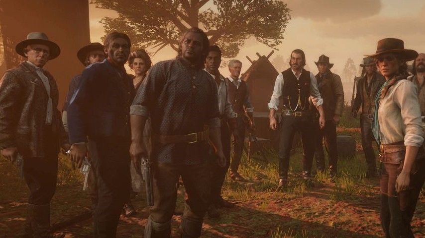
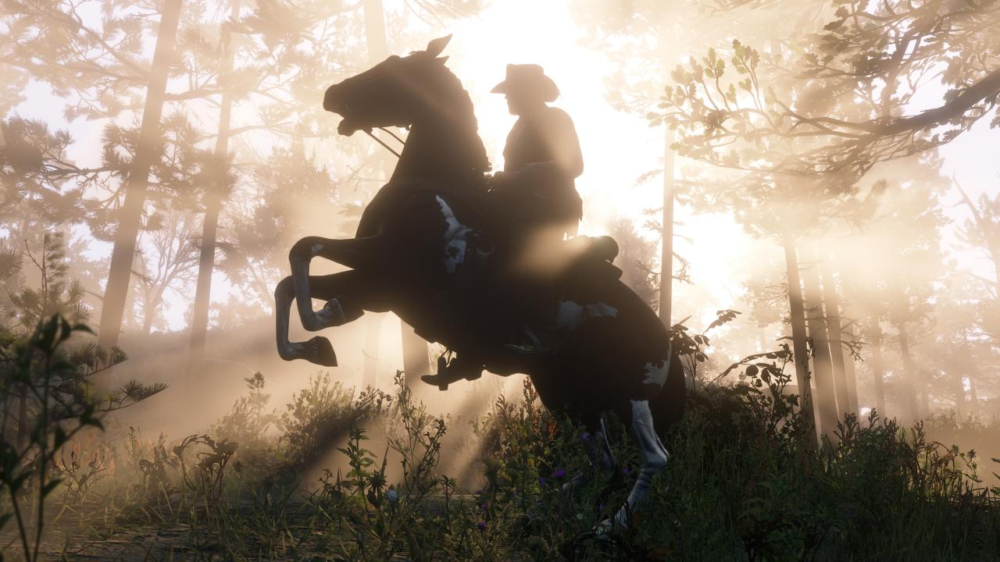
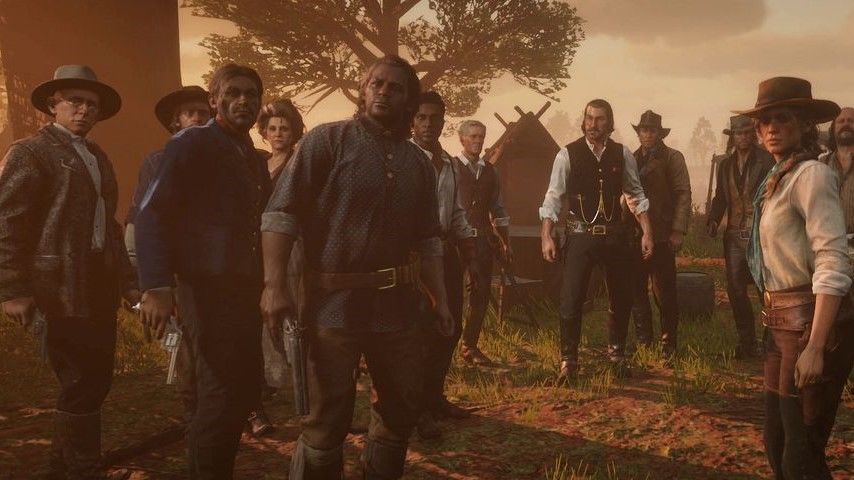
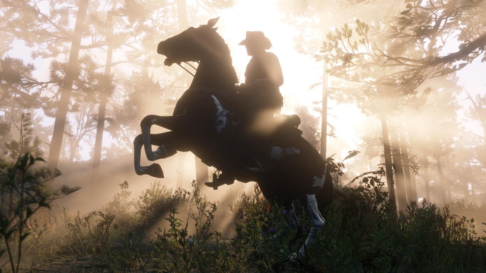

Amerika, 1899.
Artur Morgan ve Van der Linde çetesi kaçıyor. Federal ajanlar ve ülkenin en iyi ödül avcılarının amansız takibi altında çete üyeleri hayatta kalabilmek için soyguna, yağmaya ve dövüşmeye devam ederek Amerika'nın kalbindeki çetin toprakları geçmek zorunda. Bu süreçte iç çatışmaları da iyice derinleşen çete artık dağılmanın eşiğine gelirken Artur da zor bir seçimle karşı karşıya: onu yetiştiren çeteye sadık mı kalacak yoksa kendi ideallerinin peşinden mi gidecek?
Red Dead Redemption 2, şimdi ayrıca ilave Hikaye Modu ve sınırsız özellikler sunan Foto Modunun yanı sıra paylaşımlı, canlı Red dead Online dünyasına da erişim sunuyor. Oyuncular bu dünyada Ödül Avcısı, Tüccar, Koleksiyoncu ve İçki Kaçakçısı rolleri ile suçluları kovalayarak, kendi işlerini kurarak, define arayarak veya kaçak içki üreterek bu vahşi topraklarda kendi kaderlerini yazabiliyorlar.
Red Dead Redemption 2 PC sürümünün daha da derin ve gerçekçi bir deneyim sunan yeni grafik ve teknik geliştirmeleri bu muazzam açık dünyanın her köşesine ve her ayrıntısına canlılık kazandırmak için PC platformunun sağladığı teknik olanakları sonuna kadar kullanıyor. Bu teknik geliştirmeler arasında, gündüz ve gece ışık/gölge ve derinliğini arttıracak şekilde iyileştirilen genel ve ortam aydınlatması, tüm mesafelerde gelişmiş yansıma ve daha yüksek çözünürlüklü gölgelendirme, bitki ve hayvanlara daha yoğun bir gerçekçilik kazandıran mozaik ağaç dokuları ve gelişmiş ot ve hayvan kürkü dokuları bulunuyor.
Red Dead Redemption 2 PC sürümü HDR desteği de sunuyor. Bu sayede, 4K ve üzeri ekranlarda mükemmel görüntüleme, çok ekranlı kurulum, geniş ekran yapılandırmaları ve daha yüksek çerçeve hızı mümkün hale geliyor.